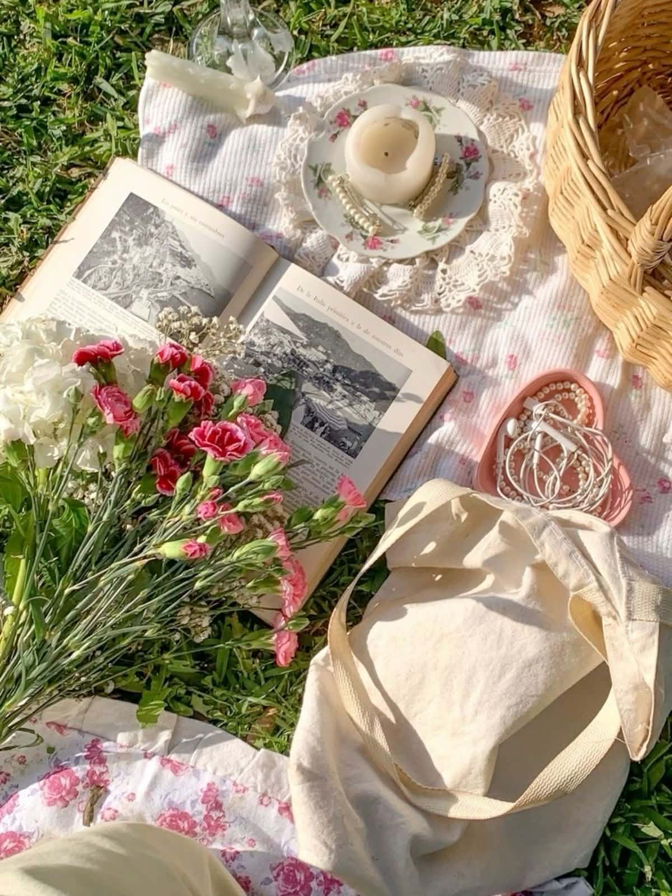
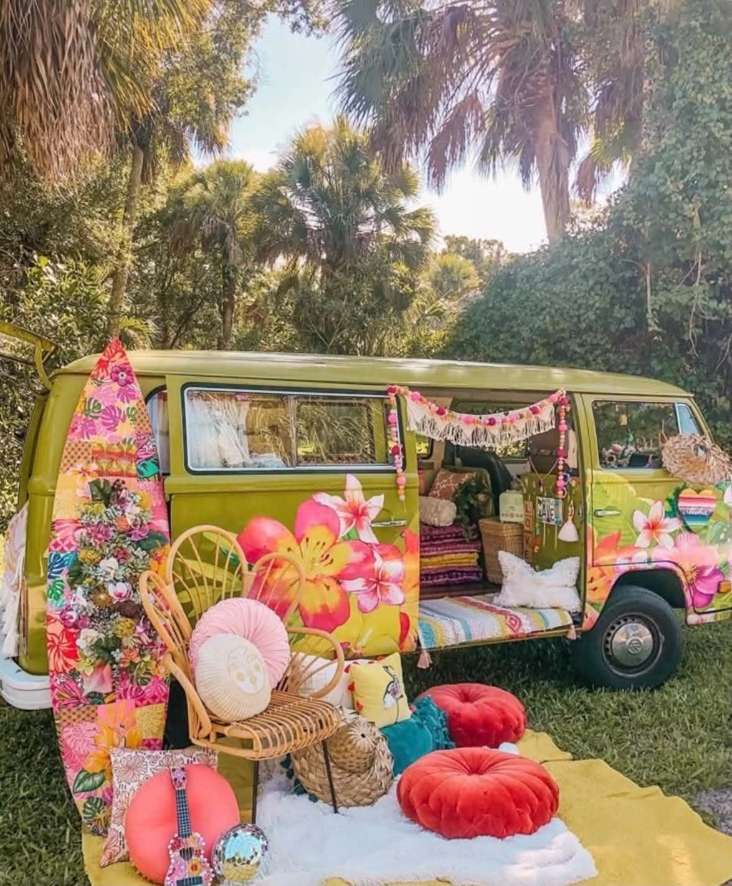
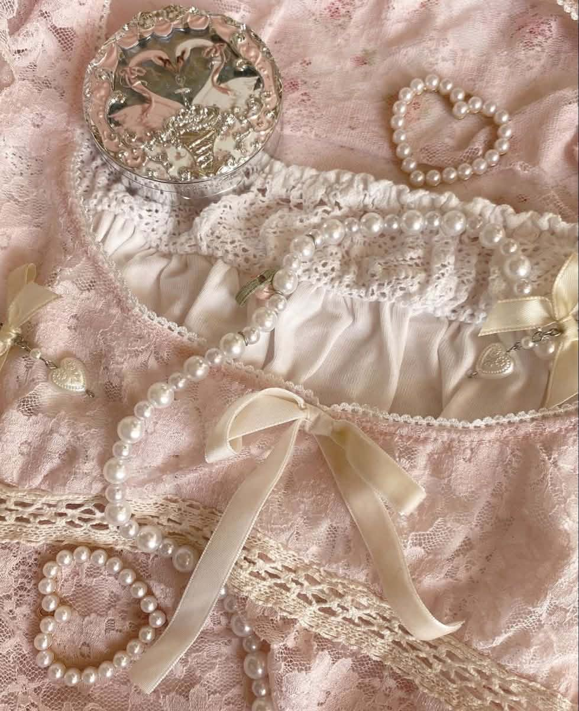

⊹₊˚‧︵‿₊୨ᰔ୧₊‿︵‧˚₊⊹
｡⋆୨୧˚Hello ˚୨୧⋆｡

CHERRY ANN P. CHAVEZ
Hello! You can just call me Chie for short. I am a first-year BSCS student at Bicol University. The kikay girlie. ݁⋆ ۶ৎ ݁˖ . ݁
⊹₊˚‧︵‿₊୨ᰔ୧₊‿︵‧˚₊⊹
｡⋆୨୧˚About Me ˚୨୧⋆｡

Hobbies๋࣭ ⭑
- Journaling
- Listening to music
- Watching Series
- Cooking
- Sleeping

Goals๋࣭ ⭑
- Graduate
- High Grades
- Travel the World
- Philippine Loop
- Own a Van/Car

Interest๋࣭ ⭑
- Cottagecore
- Whimsy
- Make Up
- Thrifting
- City
⊹₊˚‧︵‿₊୨ᰔ୧₊‿︵‧˚₊⊹
｡⋆୨୧˚My Favorites ˚୨୧⋆｡
| Categories | Favorites |
|---|---|
| Color | Pink and Sage Green |
| Things To Buy | Stationery, Makeup, Skincare, and Haircare |
| Drinks | Milktea, Coke Float, and Matcha |
| Food | Sinigang, Carbonara, Spinach Pizza, Fried Chicken, and Sisig |
| Games | Minecraft, Roblox, CODM, and Avatar World |
| TV/Series | The Mentalist, Taxi Driver, Pepito Manaloto, Dr. House, 911, etc. |
｡⋆୨୧˚My Recently Favorite Songs •*¨*•.¸¸♬︎
- Green Day - Last Night On Earth
- Rico Blanco - Wag Mong Aminin
- Kyle Raphael - Libu-Libong Buwan
⊹₊˚‧︵‿₊୨ᰔ୧₊‿︵‧˚₊⊹
｡⋆୨୧˚My Path Into Computing ˚୨୧⋆｡
Why did I choose this program? To be honest, I didn't know what I wanted, so my friend just invited me to choose this program, and I did because it doesn't have a board exam. With zero knowledge about this program, it was so hard for me to adjust. However, the longer I gain some knowledge, the more I appreciate this course. I started to feel interested and felt proud that little by little the code that looked complicated to me before I could understand slowly but surely.
⊹₊˚‧︵‿₊୨ᰔ୧₊‿︵‧˚₊⊹
｡⋆୨୧˚ My Reflection ˚୨୧⋆｡
While making this webpage, I learned that I’m a very adventurous person. Also, while making this activity, I improved on the last time because last time I relied on a template, but to be honest, I still do need it, but I use it as a guide. And while making the CSS, which my brain couldn't handle, I made it!